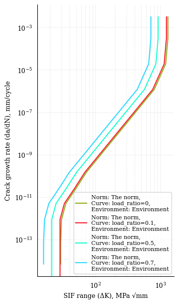

3. Crack growth curve#
Crack growth curve equations have been extensively studied since the ’50s of the last century, almost in conjunction with the first catastrophic accident of the first jet transportation aircraft, the De Havilland Comet 1 (1954), where the propagation of fatigue cracks in the upper fuselage panels, starting from the sharp corner of the top rectangular
windows brought 35 deaths. As Frost and Dugdale already pointed out in 1958, the cylindrical specimens were the protagonists of the first half of the 20th century in the panorama of fatigue, and this typology of specimens makes really complex the study of crack growth, meaning that no special attention up to that moment was given to crack growth testing of sheet specimens. Secondly, Frost and Dugdale observed that “In aircraft structures the ‘fail-safe’ design philosophy requires the structure to be constructed in such a way that fatigue cracks do not cause catastrophic failure before corrective measures can be taken”. The first scientist that emphasized the necessity to have polished surfaces to minimize the hotspots from where a crack can propagate is Griffith who extended the theorem of minimum potential energy to the phenomena of rupture of elastic solids. Griffith’s work was motivated by Inglis’ linear elastic solution for the stress around an elliptical hole asymptotically loaded in tension, from which he predicted that the stress would go to infinite as the ratio between the minor and major axis goes to zero. Griffith’s theory provides correct predictions as long as brittle materials, such as glass or ceramics, are considered. Starting from the pioneering work of Griffith, Berto and Lazzarin provided an exhaustive overview of local approaches for the description of brittle and quasi-brittle fracture of engineering materials. Anyway, since in structural materials there is almost always some inelastic deformations around the crack faces, Griffith’s hypothesis of linear elastic medium in structural metals application becomes highly unrealistic. For this reason, the first crack growth equation relating the stress with the crack growth rate (i.e. the crack length increment per cycle) did not make use of the elastic energy approach. The formulation dates 1953 and has been proposed by Head; it is based on Inglis’ solution and the final simplified form of the crack growth equation is
Where \(N\) is the number of cycles, \(\phi(\sigma)\) is (asymptotically) a linear function of the stress, yielding, and strength, \(a\) is the half crack size, and \(t_p\) is the thickness of the plastic zone ahead of the crack tip. Frost and Dugdale argued that \(t_p\) is not a constant independent of crack length and derived the exponential model for crack propagation, seldom used up to nowadays
In which ai is the initial size of the crack and kFD is an experimental quantity depending on the cubic power of the remote stress range \(\Delta \sigma\). During WWII, a group of researchers of the U.S. Naval Research Labs headed by George Rankine Irwin realized that plasticity plays an important role in in fracture mechanics. On this purpose, Griffith’s energy formulation was modified in order to make it account for plasticity, too, i.e. the energy release was redefined by adding a plastic dissipation term. Another major achievement of Irwin’s work is certainly the relation between the energy release rate \(\hat{G}\) and the stress intensity factor in opening mode \(K_I\):
where \(E^{\star}=E\) for plain stress or \(E/(1-\nu^2)\) for plane strain. The critical stress intensity factor is the value of \(K\) beyond which a crack starts to propagate and is addressed as fracture toughness \(K_C\). Namely, the toughness is the resistance to fracture of a material, it is a material property and is defined as the stress intensity factor required for a crack to advance from length a to a C. The fracture toughness values have been grouped by material family by Ashby and are shown here below.
Few years later, in 1963, Paris and Erdogan published a work substantiated by many experimental tests where they postulated, differently from Head or Frost and Dugdale, that the crack growth is described by a power law of the stress intensity factor, viz.
At the time of publication, the authors were uncertain on the value of the exponent m, in fact there is a famous statement in their paper saying: “The authors are hesitant but cannot resist the temptation to draw the straight line slope 1/4 through the data…”. Therefore, the so-called Paris’ law, or Paris-Erdogan law, has been formulated in principle with fixed m=4. Indeed, as evident from the figure here below (from Ashby’s book), the majority of engineering alloys is concentrated in the neighborhood of m=4, and this may have tricked the authors.
Paris’ law is considered valid within the range \(\Delta K_{th} < \Delta K < \Delta K_{cr}\), where \(\Delta K_{cr}\) is the critical stress intensity factor range which depends on the toughness as \(\Delta K_{cr} = (1-R)K_{Ic}\), with R load ratio, and \(\Delta K_{th}\) is the threshold value below which the crack should not propagate.
a. Definition of multiple Paris’ laws#
Note
In this example we define four SN curves for free corrosion as per DNVGL-RP-C203 and plot them using matplotlib and plotly. We additionally define a random gaussian stress range-cycles history to plot against the SN curves defined.
1# Paris' laws constants
2SIF = np.linspace(1,2500, 300)
3SLOPE_1 = np.array([2.88, 8.16])
4INTERCEPT_1 = np.array([1.21E-16, 3.98E-29])
5SLOPE_2 = np.array([8.16, 2.88])
6INTERCEPT_2 = np.array([1.21E-26, 3.98E-13])
7SLOPE_3 = 8.16
8INTERCEPT_3 = 1.21E-26
9THRESHOLD = 75.
10CRITICAL = 2000.
11
12# Paris' curves definition
13pc_1 = pf.ParisCurve(slope=SLOPE_1, intercept=INTERCEPT_1, norm="The norm",
14 environment="Environment", curve="nr. 1")
15pc_2 = pf.ParisCurve(slope=SLOPE_1, intercept=INTERCEPT_1,threshold=THRESHOLD,
16 critical=CRITICAL, norm="The norm",
17 environment="Environment", curve="nr. 2")
18pc_3 = pf.ParisCurve(slope=SLOPE_3, intercept=INTERCEPT_3, norm="The norm",
19 environment="Environment", curve="nr. 3")
20pc_4 = pf.ParisCurve(slope=SLOPE_2, intercept=INTERCEPT_2,threshold=THRESHOLD,
21 critical=CRITICAL, norm="The norm",
22 environment="Environment", curve="nr. 4")
23
24# Plotting
25fig, axs = plt.subplots(1,2, figsize=(12, 8))
26pc_1.plot(fig=fig, ax=axs[0],)
27pc_3.plot(fig=fig, ax=axs[0],)
28pc_2.plot(fig=fig, ax=axs[1],)
29pc_4.plot(fig=fig, ax=axs[1],)
30axs[0].legend()
31axs[1].legend()
32plt.show()
b. Mean stress effect on Paris’ law#
Note
This function has been added from version 1.2.0.
In the following years there have been many attempts to generalize Paris’ law, mainly to account for mean stress effect, crack closure and near threshold/near failure modelling. The simplest model of Paris’ law for mean stress effect has been proposed in 1970 by Walker:
With \(\gamma\) being Walker exponent, \(R\) the load ratio, and \(C_0\) being the intercept at \(R=0\).
Input:
1# Paris's law with Walker correction constants
2SLOPE = 4.
3INTERCEPT = 1.21E-16
4WALKER_EXPONENT = 0.5
5LOAD_RATIOS = [0, 0.1, 0.5, 0.7]
6THRESHOLDS = 75. * (1 - np.array(LOAD_RATIOS)) ** (1 - WALKER_EXPONENT)
7CRITICAL = 2000. * (1 - np.array(LOAD_RATIOS)) ** (1 - WALKER_EXPONENT)
8
9# Walker's curve definition
10
11walker_curves = [pf.ParisCurve(slope=SLOPE, intercept=INTERCEPT,
12 walker_exponent=WALKER_EXPONENT,
13 threshold=t, critical=c, load_ratio=l,
14 norm="The norm", environment="Environment",
15 curve=f"load_ratio={l}")
16 for l, t, c in zip(LOAD_RATIOS, THRESHOLDS, CRITICAL)]
17
18# Plotting
19fig, ax = plt.subplots(1,1, figsize=(6, 4))
20for pc in walker_curves:
21 pc.plot(fig=fig, ax=ax)
22ax.legend()
23plt.show()
corr_inter = intercept / (1 - load_ratio) ** (slope / (1 - walker_exponent))
Output:
c. Paris’ law curve interpolation#
Note
This function has been added from version 1.2.0.
It is now possible to build a piecewise Paris’ law curve by interpolating
between a set of “knee points”. The class method
pyfatigue.crack.ParisCurve.from_knee_points() will enforce the
piecewise curve to pass through the given points.
Warning
The function does not perform a curve fit, but rather enforces the curve to pass through the given points. Therefore, the number of knee points should be at least equal to the number of segments plus one.
in log-coordinate system, the equation becomes
directly retrieving the well-known linear equation \(Y = M \cdot X + Q\), where \(M=m\) and \(Q=\log C\).
Input:
1knee_points = """
2 29, 6.93e-14
3 30, 8.64e-13
4 35, 4.98e-12
5 50, 2.50e-11
6 72, 1.44e-10
7 800, 1.18e-6
81_200, 1.87e-5
91_300, 3.10e-4
10"""
11# Convert the string data to a list of lists
12knee_points_list = [list(map(float, line.split(',')))
13 for line in knee_points.strip().split('\n')]
14knee_points_list = np.array(knee_points_list)
15
16c_fkp = pf.ParisCurve.from_knee_points(knee_sif=knee_points_list[:,0],
17 knee_growth_rate=knee_points_list[:,1],
18 norm="Simil-NASGRO",
19 environment="N/A", curve="Interpolated")
20# Plotting
21fig, ax = plt.subplots(1,1)
22c_fkp.plot(fig=fig, ax=ax)
23ax.legend(prop={'size': 8})
24plt.show()
Output:
Applying the Walker correction to the interpolated curve:
1# SLOPE = 4.
2# INTERCEPT = 1.21E-16
3SLOPES = c_fkp.slope
4INTERCEPTS = c_fkp.intercept
5THRESHOLD = c_fkp.threshold
6CRITICAL = c_fkp.critical
7WALKER_EXPONENT = 0.5
8LOAD_RATIOS = [0, 0.1, 0.5, 0.7]
9THRESHOLDS = THRESHOLD * (1 - np.array(LOAD_RATIOS)) ** (1 - WALKER_EXPONENT)
10CRITICALS = CRITICAL * (1 - np.array(LOAD_RATIOS)) ** (1 - WALKER_EXPONENT)
11
12# Walker's curve definition
13
14walker_curves = [pf.ParisCurve(slope=SLOPES, intercept=INTERCEPTS,
15 walker_exponent=WALKER_EXPONENT,
16 threshold=t, critical=c, load_ratio=l,
17 norm="The norm", environment="Environment",
18 curve=f"load_ratio={l}")
19 for l, t, c in zip(LOAD_RATIOS, THRESHOLDS, CRITICALS)]
20
21# Plotting
22fig, ax = plt.subplots(1,1)
23for pc in walker_curves:
24 pc.plot(fig=fig, ax=ax)
25ax.legend(prop={'size': 8})
26plt.show()
Output:
